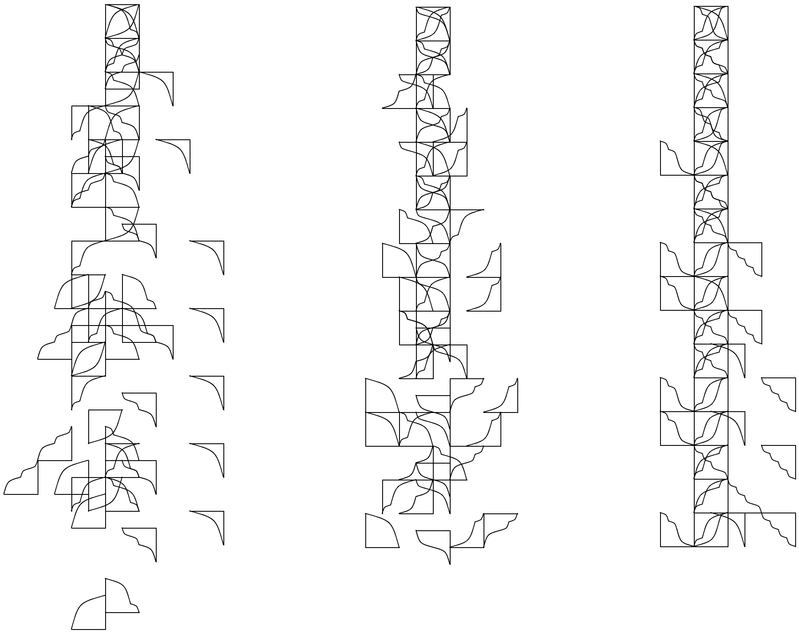
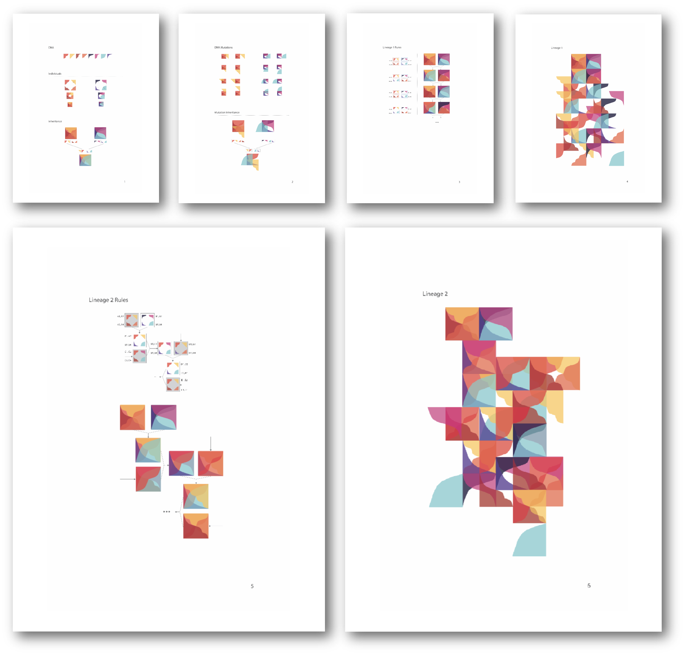
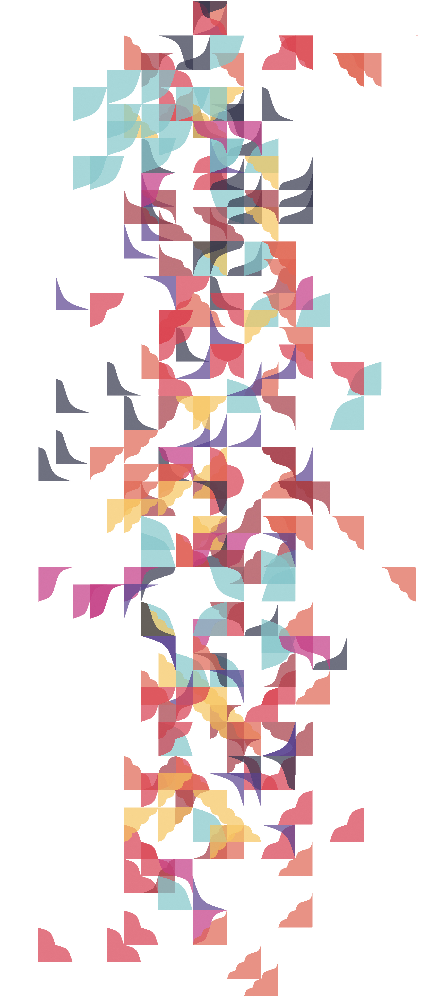
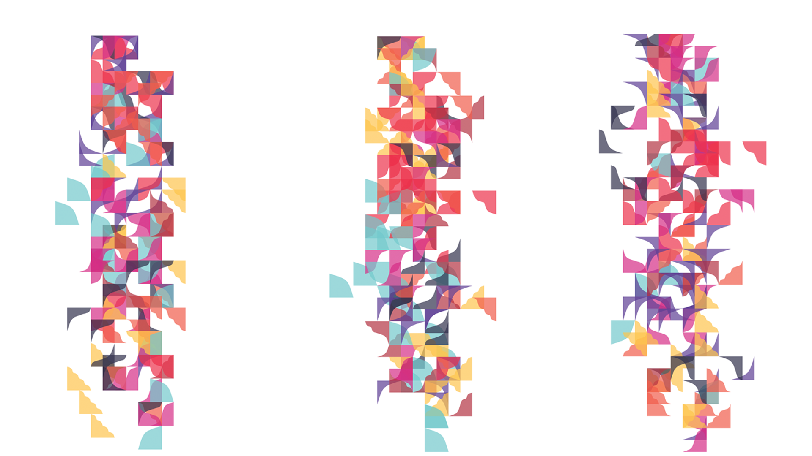
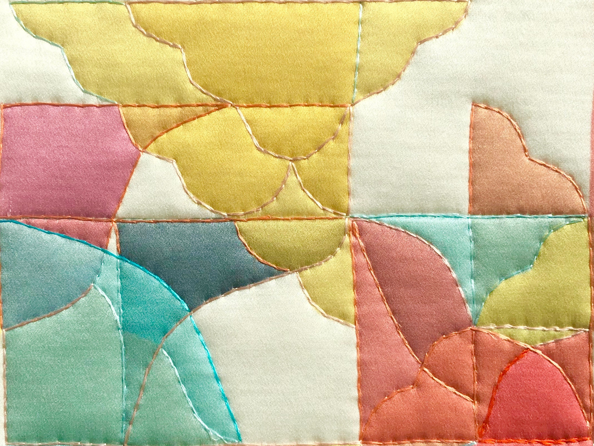

54 algorithmically-generated "characters"
The Coded textiles project, led by Anette Millington, uses digital algorithm to explore the aesthetics of embellishment. Through pattern studies, we approach embellishment as part mathematical and part material, its meaning and mechanism linked.
Parametric variations on a single algorithm, using our 54 "characters"
Algorithm documentation
Algorithmically-generated lineage
Lineage viariations (three of infinite)
Lineage as material (detail)
Credits
Research lead:
Anette Millington
Research assistant: Anna Garbier
Links
Interactive Lineage generator
Early shape exploration